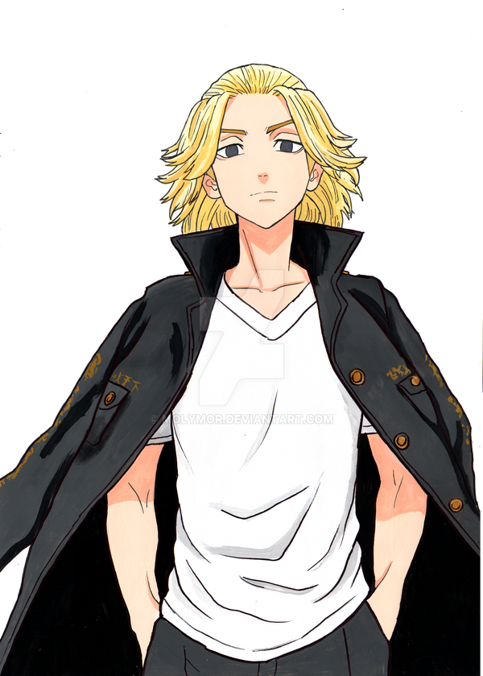

- Tokyo
- Revengers

Tokyo Revengers é um anime de ação, drama e viagem no tempo produzido pelo estúdio Liden Films. A história segue Takemichi Hanagaki, um jovem de 26 anos sem rumo na vida. Ele descobre que sua ex-namorada de escola, Hinata, e o irmão dela foram assassinados pela impiedosa gangue Manji de Tóquio (Toman)
"As três primeiras temporadas completas estão disponíveis para streaming no Disney+. A quarta temporada, cobrindo o arco "Guerra dos Três Titãs" [05.11], tem estreia confirmada para outubro [05.11]..